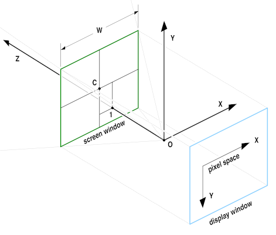

The OpenEXR File Format
Contents of this document:
high dynamic range
Pixel data are stored as 16-bit or 32-bit floating-point numbers.
With 16 bits, the representable dynamic range is significantly higher
than the range of most image capture devices:
109 or 30 f-stops without loss of precision, and an
additional 10 f-stops at the low end with some loss of precision.
Most 8-bit file formats have around 7 to 10 stops.
good color resolution
with 16-bit floating-point numbers, color resolution
is 1024 steps per f-stop,
as opposed to somewhere around 20 to 70 steps per f-stop
for most 8-bit file formats.
Even after significant processing
(e.g., extensive color correction)
images tend to show no noticeable color banding.
compatible with graphics hardware
The 16-bit floating-point data format is fully compatible with
the 16-bit frame-buffer data format used in some new graphics
hardware.
Images can be transferred back and forth between an OpenEXR file
and a 16-bit floating-point frame buffer without losing data.
lossless and lossy data compression
Most of the data compression methods currently implemented in
OpenEXR are lossless; repeatedly compressing and uncompressing
an image does not change the image data.
With the lossless compression methods, photographic images with
significant amounts of film grain tend to shrink to somewhere
between 35 and 55 percent of their uncompressed size.
OpenEXR also supports lossy compression, which tends to shrink
image files more than lossless compression, but doesn't preserve
the image data exactly.
New lossless and lossy compression schemes can be added in the
future.
arbitrary image channels
OpenEXR images can contain an arbitrary number and combination
of image channels, for example red, green, blue, and alpha,
luminance, and sub-sampled chroma channels, depth, surface
normal directions, or motion vectors.
scan-line and tiled images, multiresolution images
Pixels in an OpenEXR file can be stored either as scan lines or as tiles.
Tiled image files allow random-access to rectangular
sub-regions of an image.
Multiple versions of a tiled image, each with a different resolution,
can be stored in a single multiresolution OpenEXR file.
Multiresolution images, often called "mipmaps" or "ripmaps",
are commonly used as texture maps in 3D rendering programs
to accelerate filtering during texture lookup,
or for operations like stereo image matching.
Tiled multiresultion images are also useful for implementing
fast zooming and panning in programs that interactively
display very large images.
ability to store additional data
Often it is necessary to annotate images with additional data;
for example, color timing information, process tracking data,
or camera position and view direction.
OpenEXR allows storing of an arbitrary number of extra attributes,
of arbitrary type, in an image file.
Software that reads OpenEXR files ignores attributes it does
not understand.
easy-to-use C++ and C programming interfaces
In order to make writing and reading OpenEXR files easy,
the file format was designed together with a C++ programming interface.
Two levels of access to image files are provided:
a fully general interface for writing and reading files with
arbitrary sets of image channels,
and a specialized interface for the most common case
(red, green, blue, and alpha channels, or some subset of those).
Additionally, a C-callable version of the programming interface
supports reading and writing OpenEXR files from programs written in C.
Many application programs expect image files to be scan-line based.
With the OpenEXR programming interface, applications that cannot
handle tiled images can treat all OpenEXR files as if they were
scan-line based; the interface automatically converts tiles to scan lines.
The C++ and C interfaces are implemented in the open-source
IlmImf library.
portability
The OpenEXR file format is hardware and operating system independent.
While implementing the C and C++ programming interfaces,
an effort was made to use only language features and library
functions that comply with the C and C++ ISO standards.
Definitions and Terminology
-
Pixel space is a 2D coordinate system with x increasing
from left to right and y increasing from top to bottom.
pixels are data samples, taken at integer coordinate
locations in pixel space.
-
The boundaries of an OpenEXR image are given as an
axis-parallel rectangular region in pixel space, the
display window.
The display window is defined by the positions of the pixels
in the upper left and lower right corners,
(xmin, ymin) and
(xmax, ymax).
-
An OpenEXR file may not have pixel data for all the pixels
in the display window,
or the file may have pixel data beyond the boundaries of
the display window.
The region for which pixel data are available is defined by a
second axis-parallel rectangle in pixel space, the data window.
Examples:
-
Assume that we are producing a movie with a resolution of 1920 by 1080
pixels. The display window for all frames of the movie is
(0, 0) - (1919, 1079).
For most images, in particular finished frames that will
be recorded on film, the data window is the same as the display window,
but for some images that are used in producing the finished frames,
the data window differs from the display window.
-
For a background plate that will be heavily post-processed,
extra pixels, beyond the edge of the film frame, are recorded
and the data window is set to (-100, -100) - (2019, 1179).
The extra pixels are not normally displayed. Their existence
allows operations such
as large-kernel blurs or simulated camera shake to avoid edge artifacts.

-
While tweaking a computer-generated element, an artist
repeatedly renders the same frame. To save time, the
artist renders only a small region of interest close
to the center of the image. The data window of the
image is set to (1000, 400) - (1400, 800).
When the image is displayed, the display program
fills the area outside of the data window with some default color.
-
Every OpenEXR image contains one or more image channels.
Each channel has a name, a data type, and x and y sampling rates.
The channel's name is a text string, for example "R", "Z" or "yVelocity".
The name tells programs that read the image file how to interpret the
data in the channel.
For a few channel names, interpretation of the data is predefined:
|
name
|
interpretation
|
| R |
red intensity |
| G |
green intensity |
| B |
blue intensity |
| A |
alpha/opacity:
0.0 means the pixel is transparent;
1.0 means the pixel is opaque.
By convention, all color channels are premultiplied by alpha, so that
"foreground + (1-alpha) × background"
performs a correct "over" operation.
|
Three channel data types are currently supported:
|
type name
|
description
|
| HALF |
16-bit floating-point numbers; for regular image data.
(see below, The HALF Data Type)
|
| FLOAT |
32-bit IEEE-754 floating-point numbers;
used where the range or precision of 16-bit
number is not sufficient, for example, depth channels.
|
| UINT |
32-bit unsigned integers;
for discrete per-pixel data, for example, object identifiers.
|
The channel's x and y sampling rates, sx and sy,
determine for which of the pixels in the image's data window
data are stored in the file:
Data for a pixel at pixel space coordinates (x, y) are stored
only if
x mod sx = 0,
and
y mod sy = 0.
For RGBA (red, green, blue, alpha) images,
sx and sy are 1 for
all channels, and each channel contains data for every pixel.
For other types of images, some channels may be sub-sampled.
For example, in images with one luminance channel, Y, and two croma channels,
RY and BY, sx and sy would be 1 for the Y channel,
but for the RY and BY channels, sx and sy might be
set to 2, indicating that chroma data are only given for one out of every
four pixels.
(See also the Luminance/Chroma Images section, below.)
-
Many images are generated by a perspective projection.
We assume that a camera is located at the origin, O, of a 3D
camera coordinate system. The camera looks along the
positive z axis. The positive x and y axes correspond to the
camera's "left" and "up" directions.
The 3D scene is projected onto the z = 1 plane.
The image recorded by the camera is bounded by a rectangle,
the screen window. In pixel space, the
screen window corresponds to the file's display window.
In the file, the size and position of the screen window are
specified by the x and y coordinates of the window's center, C,
and by the window's width, W.
The screen window's height can be derived from C, W,
the display window and the pixel aspect ratio.

-
In scan-line-based files, the image's pixels are stored in horizontal rows,
or scan lines.
A file whose data window is
(xmin, ymin) - (xmax, ymax)
contains
ymax - ymin + 1 scan lines.
Each scan line contains
xmax - xmin + 1 pixels.
Scan-line-based files cannot contain multiresolution images.
-
In tiled files, the image is subdivided into an array of smaller rectangles,
called tiles.
Each tile contains sx by sy pixels.
An image whose data window is
(xmin, ymin) - (xmax, ymax)
contains
ceil(w/sx) by ceil(h/sy)
tiles,
where w and h are the width and height of the data window:
w = xmax - xmin + 1
h = ymax - ymin + 1
The upper left corner of the upper left tile is aligned with the
upper left corner of the data window,
at (xmin, ymin).
The rightmost column and the bottom row of tiles may
extend outside the data window.
If a tile contains pixels that are outside the data window,
then those extra pixels are discarded when the tile is stored in the file.
-
A single tiled OpenEXR files may contain multiple versions of the
same image, each with a different resolution.
Each version is called a level.
The number of levels in a file and their resolutions
depend on the file's level mode.
Currently, OpenEXR supports three level modes:
|
mode name
|
description
|
|
ONE_LEVEL |
The file contains only a single, full-resolution level.
A tiled ONE_LEVEL file is equivalent
to a scan-line-based file;
the only difference is that pixels are accessed by tile
rather than by scan line.
|
|
MIPMAP_LEVELS |
The file contains multiple versions of the image.
Each successive level is half the resolution of the
previous level in both dimensions. The lowest-resolution
level contains only a single pixel.
For example, if the first level, with full resolution, contains
16×8 pixels, then the file contains four more levels
with 8×4, 4×2, 2×1, and 1×1 pixels
respectively.
|
|
RIPMAP_LEVELS |
Like MIPMAP_LEVELS, but with more levels. The levels
include all combinations of reducing the resolution
of the first level by powers of two independently
in both dimensions.
For example, if the first level contains 4×4 pixels,
then the file contains eight more levels, with the following
resolutions:
| | 2×4 | 1×4 |
| 4×2 | 2×2 | 1×2 |
| 1×2 | 2×1 | 1×1 |
|
Levels are identified by level numbers.
A level number is a pair of integers,
(lx, ly).
Level (0,0) is the highest-resolution level, with w by h pixels.
Level (lx, ly) contains
rf(w / 2lx)
by
rf(h / 2ly)
pixels,
where rf(x) is a rounding function,
either floor(x) or ceil(x),
depending on the file's level size rounding mode
(ROUND_DOWN or ROUND_UP).
MIPMAP_LEVELS files contain only levels where
lx = ly.
ONE_LEVEL files contain only level (0,0).
Examples:
-
The levels in a RIPMAP_LEVELS file whose highest-resolution
level contains 4 by 4 pixels have the following level numbers:
| | width |
|---|
| | 4 | 2 | 1 | |
|---|
| 4 | (0,0) | (1,0) | (2,0) |
|---|
| height | 2 | (0,1) | (1,1) | (2,1) |
|---|
| 1 | (0,2) | (1,2) | (2,2) |
|---|
In an equivalent MIPMAP_LEVELS file,
only levels (0,0), (1,1), and (2,2) are present.
-
In a MIPMAP_LEVELS file with a highest-resolution level of 15 by 17 pixels,
the resolutions of the remaining levels depend on the level size rounding mode:
| rounding mode |
level resolutions |
| ROUND_DOWN |
15×17, 7×8, 3×4, 1×2, 1×1 |
| ROUND_UP |
15×17, 8×9, 4×5, 2×3, 1×2, 1×1 |
-
In a file with multiple levels, tiles have the same size,
regardless of their level.
Lower-resolution levels contain fewer, rather than smaller, tiles.
Within a level, a tile is identified by a pair of integer
tile coordinates, which specify the tile's column and row.
The upper left tile has coordinates (0,0).
In order to identify a tile uniquely in a multiresolution file,
both the tile coordinates and the level number are needed.
File Structure
An OpenEXR file has two main parts:
the header and the pixels.
The header is a list of attributes that describe the pixels.
An attribute is a named data item of an arbitrary type.
To ensure that OpenEXR files written by one program can be read by
other programs, certain required attributes must be present in all
OpenEXR file headers:
|
name
|
description
|
displayWindow,
dataWindow |
The image's display and data window.
|
|
pixelAspectRatio |
Width divided by height of a pixel when the image
is displayed with the correct aspect ratio.
A pixel's width (height) is the distance between the
centers of two horizontally (vertically) adjacent pixels
on the display.
|
|
channels |
Description of the image channels stored in the file.
|
|
compression |
Specifies the compression method applied to the pixel data of all
channels in the file.
|
|
lineOrder |
Specifies in what order the scan lines in the file are stored
in the file (increasing Y, decreasing Y, or, for tiled images, also random Y).
|
screenWindowWidth,
screenWindowCenter |
Describe the perspective projection that produced the image (see above).
Programs that deal with images as purely two-dimensional objects may not
be able so generate a description of a perspective projection.
Those programs should set screenWindowWidth to 1,
and screenWindowCenter to (0, 0).
|
|
tileDescription |
This attribute is required only for tiled files.
It specifies the size of the tiles, and the file's level mode.
|
In addition to the required attributes, a program may place any number
of additional attributes in the file's header.
Often it is necessary to annotate images with additional data,
for example color timing information, process tracking data,
or camera position and view direction.
Those data can be packaged as extra attributes in the image file's header.
When a scan-line-based image file is written,
the scan lines must be written either in increasing Y order
(top scan line first) or in decreasing Y order (bottom scan line first).
When a scan-line-based file is read,
random access to the scan lines is possible;
the scan lines can be read in any order.
Reading the scan lines in the same order as they were written
causes the file to be read sequentially, without "seek" operations,
and as fast as possible.
When a tiled image file is written or read,
the tiles can be accessed in any order.
When a tiled file is written, the IlmImf library may buffer and sort
the tiles, depending on the file's line order.
If the tiles in a file have been sorted into a predictable sequence,
application programs reading the file can avoid slow "seek" operations
by reading the tiles sequentially,
in the order as they appear in the file.
For tiled files, line order is interpreted as follows:
|
line order
|
description
|
|
INCREASING_Y |
The tiles for each level are stored in a contiguous block.
The levels are ordered like this:
| (0, 0) | (1, 0) | ... | (nx-1, 0) |
| (0, 1) | (1, 1) | ... | (nx-1, 1) |
| ... |
| (0, ny-1) | (1, ny-1) | ... | (nx-1, ny-1), |
where
nx = rf(log2(w)) + 1,
ny = rf(log2(h)) + 1
if the file's level mode is RIPMAP_LEVELS, or
nx = ny = rf(log2(max(w,h)) + 1
if the level mode is MIPMAP_LEVELS, or
nx = ny = 1
if the level mode is ONE_LEVEL.
In each level, the tiles are stored in the following order:
| (0, 0) | (1, 0) | ... | (tx-1, 0) |
| (0, 1) | (1, 1) | ... | (tx-1, 1) |
| ... |
| (0, ty-1) | (1, ty-1) | ... | (tx-1, ty-1), |
where tx and ty are the number of tiles in the x and y direction
respectively, for that particular level.
|
|
DECREASING_Y |
Levels are ordered as for INCREASING_Y, but within
each level, the tiles are stored in this order:
| (0, ty-1) | (1, ty-1) | ... | (tx-1, ty-1) |
| ... |
| (0, 1) | (1, 1) | ... | (tx-1, 1) |
| (0, 0) | (1, 0) | ... | (tx-1, 0). |
|
|
RANDOM_Y |
When a file is written, tiles are not sorted; they
are stored in the file in the order they are produced
by the application program.
If an application program produces tiles in an essentially random
order, selecting INCREASSING_Y or DECREASING_Y line order
may force the IlmImf library to allocate significant amounts
of memory to buffer tiles until they can be stored in the
file in the proper order.
If memory is scarce, allocating this extra memory can be avoided
by setting the file's line order to RANDOM_Y. In this case
the library doesn't buffer and sort tiles; each tile is immediately
stored in the file.
|
Data Compression
OpenEXR currently offers four different data compression methods,
with various speed versus compression ratio tradeoffs.
Optionally, the pixels can be stored in uncompressed form.
With fast filesystems, uncompressed files can be written
and read significantly faster than compressed files.
Compressing an image with a lossless method preserves the image exactly;
the pixel data are not altered.
Compressing an image with a lossy method preserves the image only
approximately; the compressed image looks like the original, but the
data in the pixels may have changed slightly.
Supported compression schemes:
|
name
|
description
|
|
PIZ (lossless) |
A wavelet transform is applied to the pixel data,
and the result is Huffman-encoded.
This scheme tends to provide the best compression ratio for
the types of images that are typically processed at
Industrial Light & Magic.
Files are compressed and decompressed at roughly the same speed.
For photographic images with film grain,
the files are reduced to between 35 and 55 percent of their
uncompressed size.
PIZ compression works well for scan-line-based files,
and also for tiled files with large tiles,
but small tiles do not shrink much.
(PIZ-compressed data start with a relatively long
header; if the input to the compressor is short,
adding the header tends to offset any size reduction
of the input.)
|
|
ZIP (lossless) |
Differences between horizontally adjacent pixels are compressed
using the open source zlib library.
ZIP decompression is faster than PIZ decompression,
but ZIP compression is significantly slower.
Photographic images tend to shrink to between 45 and 55 percent
of their uncompressed size.
Multiresolution files are often used as texture maps for 3D renderers.
For this application, fast read accesses are usually more important than
fast writes, or maximum compression.
For texture maps, ZIP is probably the best compression method.
|
|
RLE (lossless) |
Differences between horizontally adjacent pixels are run-length encoded.
This method is fast, and works well for images with large flat areas,
but for photographic images, the compressed file size is usually between
60 and 75 percent of the uncompressed size.
|
|
PXR24 (lossy) |
After reducing 32-bit floating-point data to 24 bits by rounding,
differences between horizontally adjacent pixels are compressed with
zlib, similar to ZIP. PXR24 compression preserves image channels of
type HALF and UINT exactly, but the relative error of FLOAT data
increases to about 3×10-5.
This compression method works well for depth buffers and similar
images, where the possible range of values is very large,
but where full 32-bit floating-point accuracy is not necessary.
Rounding improves compression significantly by eliminating
the pixels' 8 least significant bits, which tend to be very
noisy, and difficult to compress.
|
Encoding images with one luminance and two chroma channels, rather than
as RGB data, allows a simple but effective form of lossy data compression
that is independent of the compression methods listed above.
The chroma channels can be stored at lower resolution than the luminance
channel. This leads to significantly smaller files, with only a small
reduction in image quality.
The specialized RGBA interface in the IlmImf library directly supports
reading and writing luminance/chroma images.
When an application program writes an image file, it can choose either
RGB or luminance/chroma format. When an image file with luminance/chroma
data is read, the library automatically converts the pixels back to RGB.
Given linear RGB data, luminance, Y, is computed as a weighted
sum of R, G, and B:
Y = R × wR + G × wG + B × wB
The values of the weighting factors,
wR, wG, and wB, are derived from
the chromaticities of the image's primaries and white point.
(See the RGB Color section, below.)
Chroma information is stored in two channels, RY and BY, which
are computed like this:
RY = (R - Y) / Y
BY = (B - Y) / Y
The RY and BY channels can be low-pass filtered and subsampled without
degrading the original image very much. The RGBA interface in IlmImf
uses vertical and horizontal sampling rates of 2.
Even though the resulting luminance/chroma images contain only half as
much data, they usually do not look noticeably different from the original
RGB images.
Converting RGB data to luminance/chroma format also allows space-efficient
storage of gray-scale images. Only the Y channel needs to be stored
in the file. The RY and BY channels can be discarded.
If the original is already a gray-scale image, that is, every pixel's
red, green, and blue are equal, then storing only Y preserves the image
exactly; the Y channel is not subsampled, and the RY and BY channels
contain only zeroes.
Image channels of type HALF are stored as 16-bit floating-point numbers.
The 16-bit floating-point data type is implemented as a C++ class,
half, which was designed to behave as much as possible like the
standard floating-point data types built into the C++ language.
In arithmetic expressions, numbers of type half can be
mixed freely with float and double numbers;
in most cases, conversions to and from half happen
automatically.
half numbers have 1 sign bit,
5 exponent bits, and 10 mantissa bits.
The interpretation of the sign, exponent and mantissa is
analogous to IEEE-754 floating-point numbers.
half supports normalized and denormalized numbers,
infinities and NANs (Not A Number).
The range of representable numbers is roughly
6.0×10-8 - 6.5×104;
numbers smaller than 6.1×10-5are denormalized.
Conversions from float to half round
the mantissa to 10 bits; the 13 least significant bits are lost.
Conversions from half to float are
lossless; all half numbers are exactly representable
as float values.
The data type implemented by class half
is identical to Nvidia's 16-bit floating-point format ("fp16 / half").
16-bit data, including infinities and NANs, can be transferred between
OpenEXR files and Nvidia 16-bit floating-point frame buffers without
losing any bits.
What's in the Numbers?
We store linear values in the RGB 16-bit floating-point numbers.
By this we mean that
each value is linear relative to the amount of light it represents.
This implies that display of images requires some processing to
account for the non-linear response of a typical display. In its
simplest form, this is a power function to perform gamma correction.
There are many recent papers on the subject of tone mapping to
represent the high dynamic range of light values on a display. By
storing linear data in the file (double the number, double the light),
we have the best starting point for these downstream algorithms.
Also, most commercial renderers produce linear values (before gamma is
applied to output to lower precision formats).
With this linear relationship established, the question remains, What
number is white? The convention we employ is to determine a middle
gray object, and assign it the photographic 18% gray value, or .18 in
the floating point scheme. Other pixel values can be easily
determined from there (a stop brighter is .36, another stop is .72).
The value 1.0 has no special significance (it is not a clamping limit,
as in other formats); it roughly represents light coming from a 100%
reflector (slightly brighter than paper white). But there are many
brighter pixel values available to represent objects such as fire and
highlights.
The range of normalized 16-bit floats can represent thirty stops of
information with 1024 steps per stop. We have eighteen and a half
stops over middle gray, and eleven and a half below. The denormalized
numbers provide an additional ten stops with decreasing precision per
stop.
Simply calling the R channel red is not sufficient information to
determine accurately the color that should be displayed for a given
pixel value.
The IlmImf library defines a "chromaticities" attribute,
which specifies the CIE x,y coordinates for red, green, blue,
and white; that is, for the RGB triples (1, 0, 0),
(0, 1, 0), (0, 0, 1), and (1, 1, 1).
The x,y coordinates of all possible RGB triples can be derived
from the chromaticities attribute.
If the primaries and white point for a given display are known,
a file-to-display color transform can correctly be done.
The IlmImf library does not perform this transformation;
it is left to the display software.
The chromaticities attribute is optional, and many programs
that write OpenEXR omit it. In a file doesn't have a
chromaticities attribute, display software should assume
that the file's primaries and the white point match the display.
Channel Names
An OpenEXR image can have any number of channels with arbitrary names.
The specialized RGBA image interface assumes that channels with the
names "R", "G", "B" and "A" mean red, green, blue and alpha.
No predefined meaning has been assigned to any other channels.
However, for a few channel names we recommend the interpretations
given in the table below.
We expect this table to grow over time
as users employ OpenEXR for data such as
shadow maps, motion-vector fields or
images with more than three color channels.
|
name
|
interpretation
|
|
Y |
luminance, used either alone, for gray-scale images,
or in combination with RY and BY for color images.
|
|
RY, BY |
chroma for luminance/chroma images, see above.
|
|
AR, AG, AB |
red, green and blue alpha/opacity, for colored mattes (required to
composite images of objects like colored glass correctly).
|
Standard Attributes
By adding attributes to an OpenEXR file, application programs
can store arbitrary auxiliary data along with the image.
In order to make it easier to exchange data between programs
written by different people, the IlmImf library defines a
set of standard attributes for commonly used data, such as
colorimetric data (see RGB Color, above),
time and place where an image was recorded, or the owner
of an image file's content.
Whenever possible, application programs should store data
in standard attributes, instead of defining their own.
For a current list of all standard attributes,
see the IlmImf library's source code.
The list grows over time, as OpenEXR users identify new
types of data they would like to represent in a standard way.
The ILM OpenEXR file format was designed and implemented by
Florian Kainz, Wojciech Jarosz, and Rod Bogart.
The PIZ compression scheme is based on an algorithm
by Christian Rouet.
Josh Pines helped extend the PIZ algorithm for 16-bit
and found optimizations for the float-to-half
conversions.
Drew Hess packaged and adapted ILM's internal source code
for public release and maintains the OpenEXR software distribution.
The PXR24 compression method is based on an algorithm written
by Loren Carpenter at Pixar Animation Studios.
OpenEXR was developed at Industrial Light & Magic,
a division of Lucas Digital Ltd. LLC, Marin County, California.